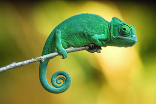
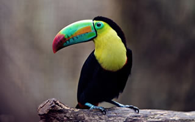
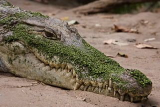
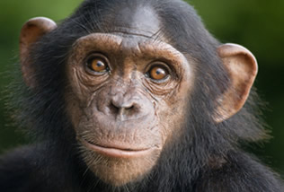
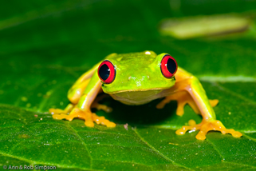

Chameleon
 Chameleons or chamaeleons (family Chamaeleonidae) are a distinctive and highly specialized clade of old world lizards with 202 species described as of June 2015. These species come in a range of colours, and many species have the ability to change colours. Chameleons are distinguished by their zygodactylous feet; their very long, highly modified, rapidly extrudable tongues; their swaying gait; and crests or horns on their distinctively shaped heads. Most species, the larger ones in particular, also have a prehensile tail. Chameleons' eyes are independently mobile, but in aiming at a prey item, they focus forward in coordination, affording the animal stereoscopic vision. Chameleons are adapted for climbing and visual hunting. They are found in warm habitats that range from rain forest to desert conditions, various species occurring in Africa, Madagascar, southern Europe, and across southern Asia as far as Sri Lanka. They also have been introduced to Hawaii, California, and Florida, and often are kept as household pets.Some chameleon species are able to change their skin coloration. Different chameleon species are able to vary their colouration and pattern through combinations of pink, blue, red, orange, green, black, brown, light blue, yellow, turquoise, and purple. Chameleon skin has a superficial layer which contains pigments, and under the layer are cells with guanine crystals. Chameleons change color by changing the space between the guanine crystals, which changes the wavelength of light reflected off the crystals which changes the color of the chameleon' skin. Color change in chameleons has functions in social signaling and in reactions to temperature and other conditions, as well as in camouflage. The relative importance of these functions varies with the circumstances, as well as the species. Color change signals a chameleon's physiological condition and intentions to other chameleons. Chameleons tend to show darker colors when angered, or attempting to scare or intimidate others, while males show lighter, multicolored patterns when courting females.
For more information on chameleons, please visit this page.
Toucan
 Toucans are members of the family Ramphastidae of near passerine birds from the Neotropics. The Ramphastidae family is most closely related to the American barbets. They are brightly marked and have large, often colorful bills. The family includes five genera and about forty different species. The name of this bird group is derived from the Tupi word tukana, via Portuguese. The family includes toucans, aracaris and toucanets; more distant relatives include various families of barbets and woodpeckers in the suborder Pici.Toucans range in size from the lettered aracari (Pteroglossus inscriptus), at 130 g (4.6 oz) and 29 cm (11.5 inches), to the toco toucan (Ramphastos toco), at 680 g (1.5 lb) and 63 cm (29 inches). Their bodies are short (of comparable size to a crow's) and compact. The tail is rounded and varies in length, from half the length to the whole length of the body. The neck is short and thick. The wings are small, as they are forest-dwelling birds who only need to travel short distances, and are often of about the same span as the bill-tip-to-tail-tip measurements of the bird.
For more information on toucans, please visit this page.
Crocodile
 Crocodiles (subfamily Crocodylinae) or true crocodiles are large aquatic reptiles that live throughout the tropics in Africa, Asia, the Americas and Australia. Crocodylinae, all of whose members are considered true crocodiles, is classified as a biological subfamily. A broader sense of the term crocodile, Crocodylidae that includes Tomistoma, is not used in this article. The term crocodile here applies only to the species within the subfamily of Crocodylinae. The term is sometimes used even more loosely to include all extant members of the order Crocodilia, which includes Tomistoma, the alligators and caimans (family Alligatoridae), the gharials (family Gavialidae), and all other living and fossil Crocodylomorpha.Crocodile size, morphology, behavior and ecology somewhat differs between species. However, they have many similarities in these areas as well. All crocodiles are semiaquatic and tend to congregate in freshwater habitats such as rivers, lakes, wetlands and sometimes in brackish water and saltwater. They are carnivorous animals, feeding mostly on vertebrates such as fish, reptiles, birds and mammals, and sometimes on invertebrates such as molluscs and crustaceans, depending on species and age. All crocodiles are tropical species that unlike alligators, are very sensitive to cold. They first separated from other crocodilians during the Eocene epoch, about 55 million years ago. Many species are at the risk of extinction, some being classified as critically endangered.
For more information on crocodiles, please visit this page.
Chimpanzee
 Chimpanzees, colloquially called chimps, are two extant hominid species of apes in the genus Pan. The Congo River divides the native habitats of the two species: Common chimpanzee, Pan troglodytes (West and Central Africa)Bonobo, Pan paniscus (forests of the Democratic Republic of the Congo)Chimpanzees are members of the family Hominidae, along with humans, gorillas, and orangutans. They split from the human line about four to six million years ago, see Chimpanzee-human last common ancestor. Chimpanzees (subtribe Panina) are the closest living relatives to humans (subtribe Hominina); both are members of the tribe Hominini. Chimpanzees are the only known members of the subtribe Panina.
The two Pan species, bonobo and common chimpanzee, split about one million years ago. This article uses the individual name when distinguishing one species or the other, and uses Pan or chimpanzee (or chimp) when both or either one is implied.
Here are some quick facts about chimps:
- If you ever wonder if you are looking at an ape or a monkey, look for a tail. Monkeys have tails, apes: chimpanzees, bonobos, gorillas, orangutans, gibbons, and humans –do not.
- Chimpanzee communities may range in size from 15 to 120 chimps of both sexes and all ages.
- Females have a bright pink bottom that signals to males when they are fertile.
- Chimpanzees communicate with each other through a complex system of vocalizations, gestures, body postures and facial expressions.
- Grooming has a two-fold purpose: cleaning, and cementing the bonds of family and friendship. By running their fingers through each other’s hair, chimpanzees remove dirt, dead skin, and parasites.
Tree frog
 A tree frog is any species of frog that spends a major portion of its lifespan in trees, known as an arboreal state. Several lineages of frogs among the Neobatrachia have given rise to tree frogs, although they are not closely related to each other. Many millions of years of convergent evolution have resulted in almost identical morphology and ecologies. They are so similar as regards their ecological niche that in one biome where one group of tree frogs occurs, the other is almost always absent. The last common ancestor of some such tree frog groups lived long before the extinction of the dinosaurs.As the name implies, these frogs are typically found in trees or other high-growing vegetation. They do not normally descend to the ground, except to mate and spawn, though some build foam nests on leaves and rarely leave the trees at all as adults.
Many tree frogs can change their color for better camouflage. For instance, the grey tree frog (Hyla versicolor) can change its color from green to grey to yellow.
Tree frogs are usually tiny, as their weight has to be carried by the branches and twigs in their habitats. While some reach 10 cm (4 in) or more, they are typically smaller and more slender than terrestrial frogs. Tree frogs typically have well-developed discs at the finger and toe tips; the fingers and toes themselves, as well as the limbs, tend to be rather small, resulting in a superior grasping ability. The genus Chiromantis of the Rhacophoridae is most extreme in this respect: it can oppose two fingers to the other two, resulting in a vise-like grip.
For more information on tree frogs, please visit this page.